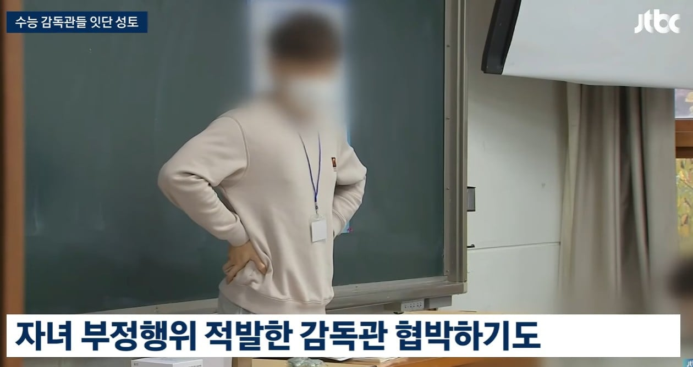
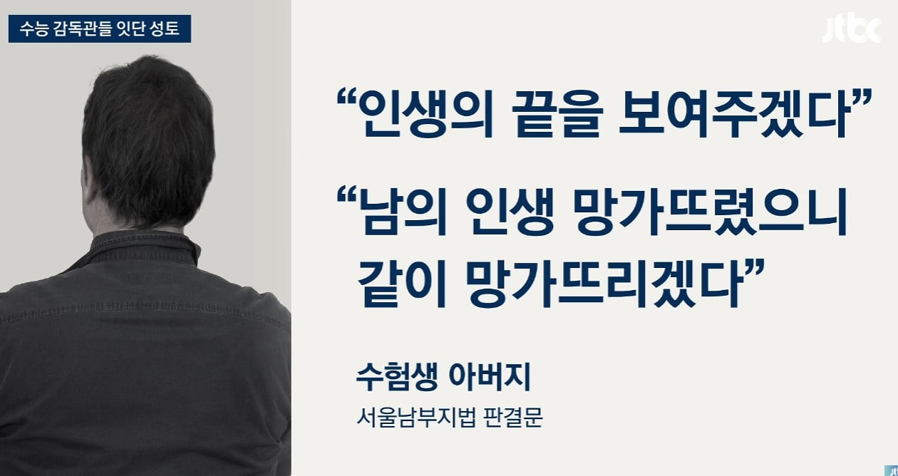
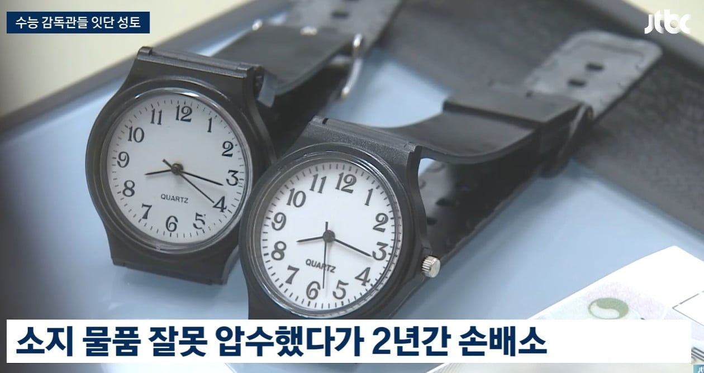

어떻게?
궁금하다
고소남발, 허위 민원남발만 해도 사람 하나 인생 존나 힘들게 만들수 있음 진짜 잘못된건데 막아 줄 수 있는 수단은 부족함
잘못한게 없는데 인권위에서 조사하러 오고 경위서 작성하라고 하고 경찰에서 연락오고 법원 오라고 한다고 생각해봐 직장 그만두고싶을걸
이게 ㄹㅇ 좆같음 ㅋㅋ
일반인이여도 고소남발로 고소당하면 존나 귀찮은데 쟤들은 더하지
심지어 복수할방법이 딱히 없음
내 인생 걸고 찾아가서 죽여버리는거 제외하고 ㅇㅇ
돈 많은 애들은 그냥 자동사냥 돌림
무고죄가 존나 받기 어렵기도 해서 짜증남
그래서 무고대신 협박죄로 빨간줄 긋고 직장 퇴사 시키더라
당연히 그 사람 ㅈ되게 하려는 목적으로 손해보면서 조지는거고 ㅋㅋ

소지물품을 잘못 압수 <- AI치팅 잡기 어려운 이유지. (부정행위 정당하게 적발한거에 대한게아니라 막짤보고하는말임)
아리까리해서 시험때 딱 적발하려고했는데 쟌넨 아니었습니다? 시험감독관 2년간 손배소 컄ㅋㅋㅋ 좆되는거지
그럼 적발에 성공하면? 좋은게 뭐있음? 노리턴 슈퍼하이리스크인데 누가 적발하려고하겠음.
그렇다고 적발에 승진점수 가산점이나 현금으로 지급하면? 바로 코브라 효과 ON임 ㅋㅋㅋㅋㅋ
답은 emp다
박현준!!! emp 발사해!!
얼마나 인망높고 잘사는 집안이면 저런소리 하는걸까 ㅋㅋㅋ
걍 시험장 들어갈때 복장 소지품 다 통제해야한다고봄..
올해뉴스맞음? 옛날뉴스아님?
https://news.jtbc.co.kr/video/NB12328522
5일전
4일전 뉴스임
옛날이네..
곧 5일전임
뉴스에서 소개하는 시계압수사건 2016년, 인생 어쩌구 협박한 사건은 2024수능때 벌어진사건..
뉴스자체는 4일전 이겠지만 뉴스에서 소개하는 사건들은 10년전하고 3년전사건이긴함
언행은 좀 잘못됐지만
소지물품을 잘못압수했으면 소송걸려야 하는거 아님?
맞음 그냥 개붕이들 AI이슈터진김에 욕어떻게든 박아보고싶어서 그럼
그럼 감독관 전문 교육 받은 사람울 따로 뽑아야지
그럼 감독관들 안잡을듯 내가 ㅈ될수도 있는데?? ㄹㅇ 그냥 딜레마임
나중에 다 끝나고 잡으면 되는거지 뭔 딜레마임?
감독관이 실수하면 벌 받게 한다 > 그럼 감독관이 소극적으로 변함
감독관이 실수해도 면책해준다 > 그럼 감독관이 막 나감
이래도 저래도 욕 먹는 문제라고 봄.
정당한 행사는 끝까지 커버치고 역공도 하고
정당하지 않은거는 사안에 따라 처벌하고
이러면 되는거지
명백한 이유가 있는 실수는 소송 걸면 국가가 책임져야지...
예를 들어 미국에서 경찰관한테 장난감 총 들고 있는 사람이 달려들면 공격한다고 오해해서 사고나면 면책 아님?
그 점에서 교육부가 그냥 열중쉬어 하고 있는거지
그리고, 사법부도 감독관 개인에게 소송하면
교육부나 국가상대로 전환하도록 하는 권고라든가 해야하지않나 싶네
그럼 얘가 부정행위하는지 안하는지 내가 왜 굳이 일일이 신경쓰면서 잡아? 잘못하다가 소송걸리는데. 그럼 난 어차피 차출당해 온건대 보신주의로 그냥 자리만지키다가 갈꺼같아
국가가 이럴때 책임지고 감독관을 보호해야 걱정없이 부정행위자를 잡겠지. 물론 그 과정에서 실수가 있을수있겠지. 근데 고의가 없었다면, 국가가 다 책임져줘야한다고 생각함
어차피 여긴 국가도 책임안짐ㅋㅋ
잘못압수한 시계사건은 2016년 사건 2심까지 갔고 1심에서 배상책임 나왔다가 항소심에 뒤집혀서 선생님이 배상할건없
잘못했네
내 아들이 억울하게 의심 받아서 수능 망치면 과연 내가 "그럴 수 있지~" 라고 할 수 있을까
이게 시험 끝나고 쉬는시간에 체크 사는 거 아님 그게 뭐 문제가 있나?
수능장에서 감독관 재량으로 소지품 압수하는건 정당한 권리 아님?
이번에 수험생이 개인컴싸가지고와서 퇴장당했다가 번복된경우도있더만
그건 고소 고소. 고소해야지
그건 감독관의 명백한 과실이 맞음. 압수만 하면 되는데 퇴실까지 시켜놓고 잘못 조치한 거 알고 번복시킨 거라.
이런 것들은 쌍판이랑 거주지 직장 다 공개하면 안 됨?
ㅇㅇ잘못압수한 공무원 얼굴 다 까서 공개할거면 해도된다
삼청교육대 만들라했제 ?? 지금이라도 외양간 고쳐라 빨리
정당행위 아님..?
본인인생은 본인들이 말아드셨네
막짤 뭐임? 걍 수능시계를 압수한거야?
저거 2년 전 일인데 부정행위 한 학생 정당하게 잡아낸 감독관을 괴롭힌거임. 수험생 아버지는 인강강사였고.
수험생 당사자와 가족 입장에서는 멀쩡하게 시험 잘 치고 있는데 감독관 실수로 시계 압수당하면 멘탈 털리고 시험 존망한거 아님? 우리나라처럼 입시에 목숨거는 사회에서 저건 피가 거꾸로 솟을 만한거 같은데?
멀쩡하게 시험 잘 친 새끼가 아니니까 문제지 ㅋㅋㅋㅋ
시계사건은 2016년도 사건이고 1심은 선생이 배상해야한다고 했다가 항소심에 뒤집혀서 배생책임 없어졌음
개인이 고소받아도 기관에서 대응하도록 해야 되는데
저 시계는 무슨 문제라도
뻔뻔한 양반들